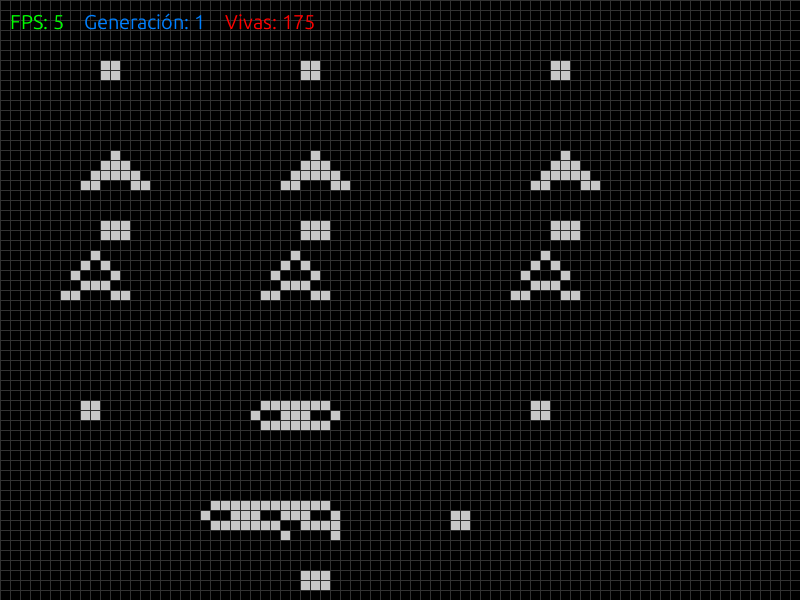
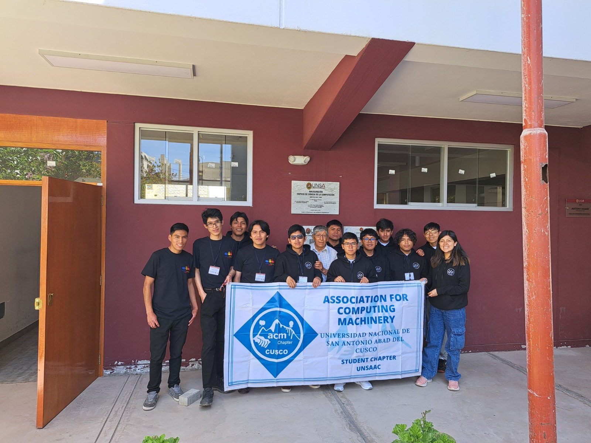
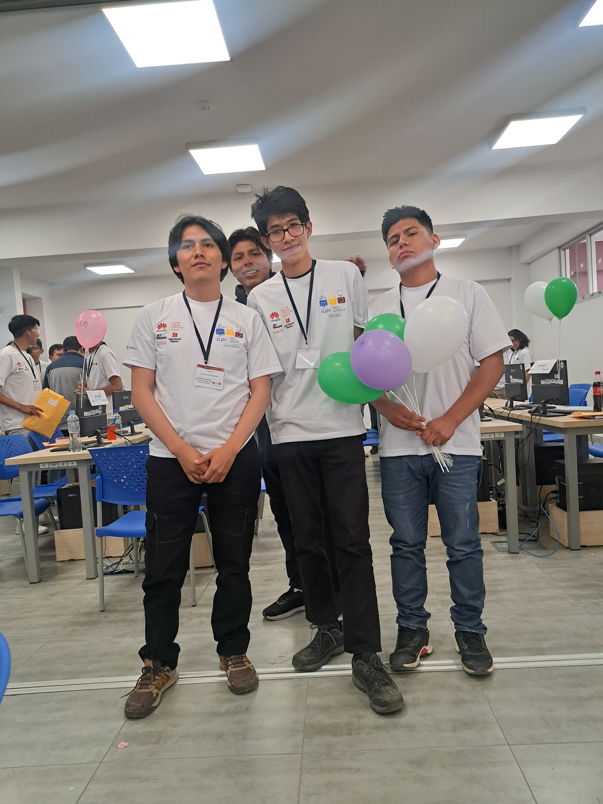
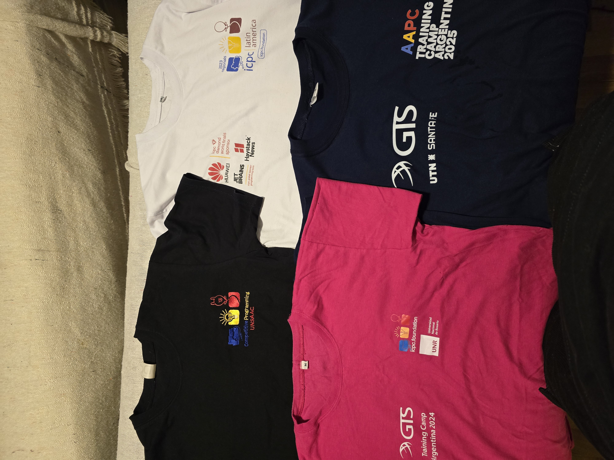
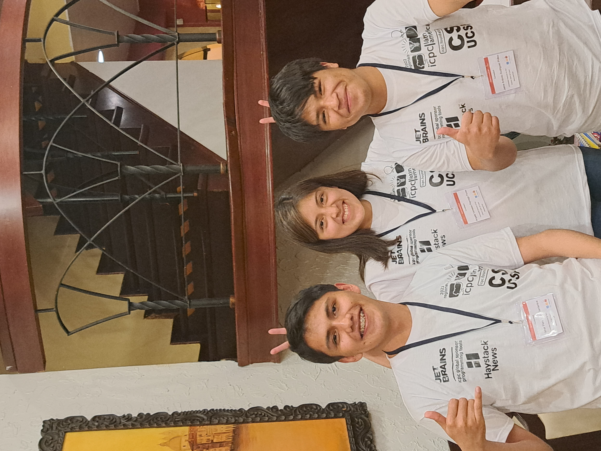
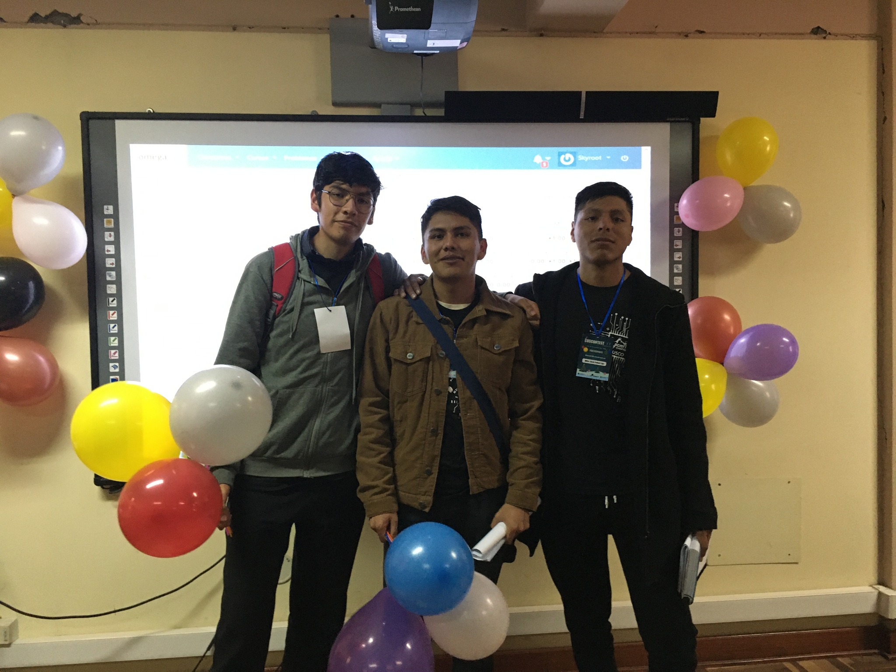
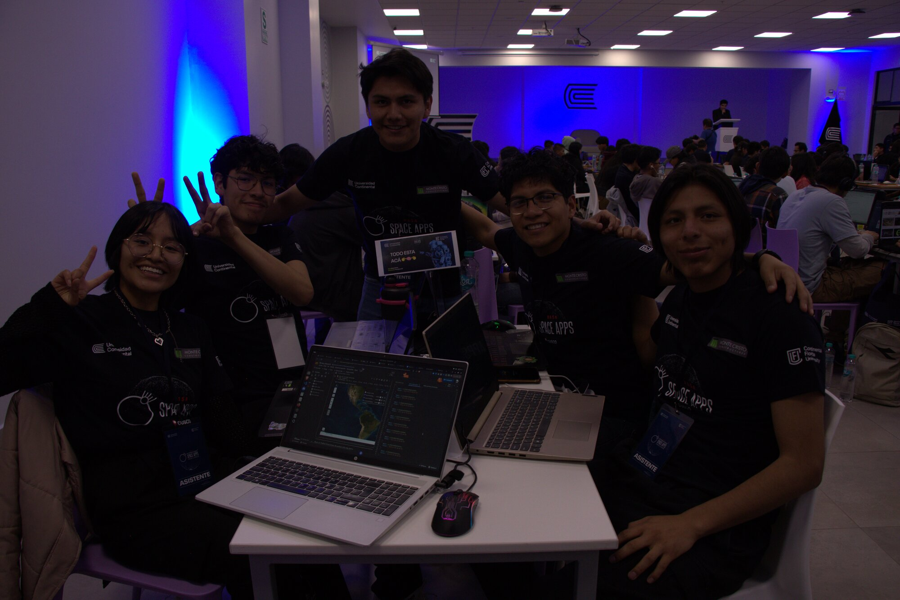
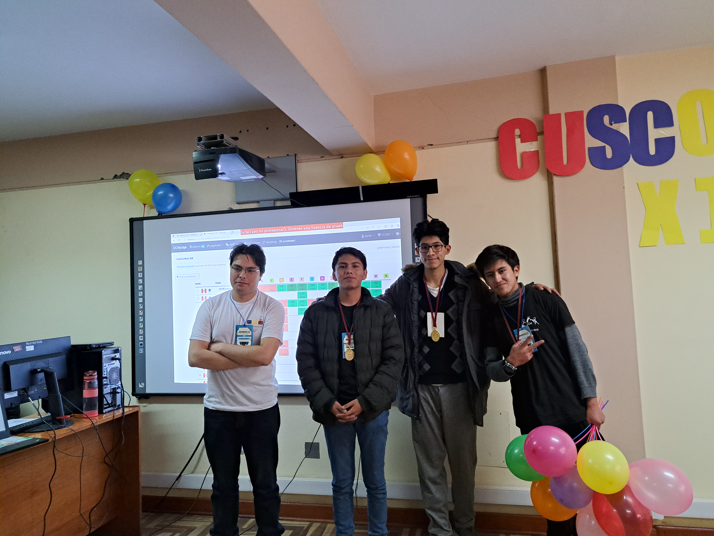
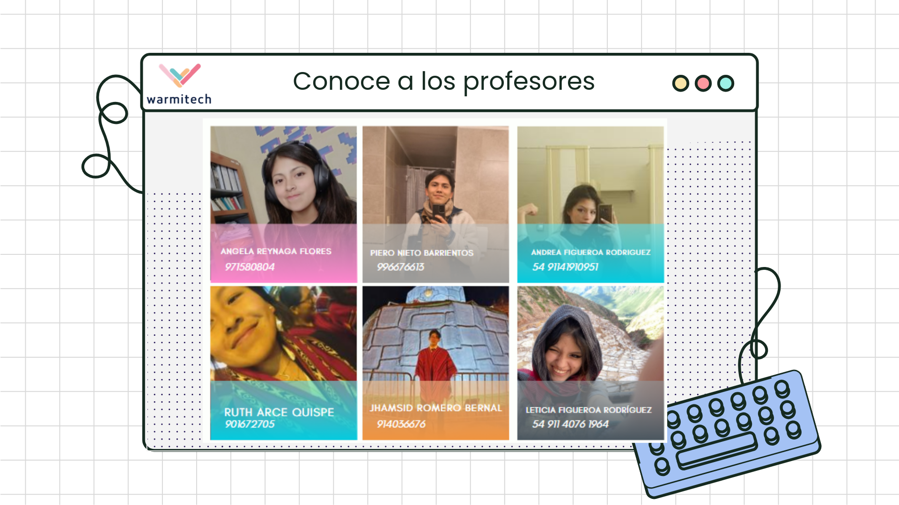
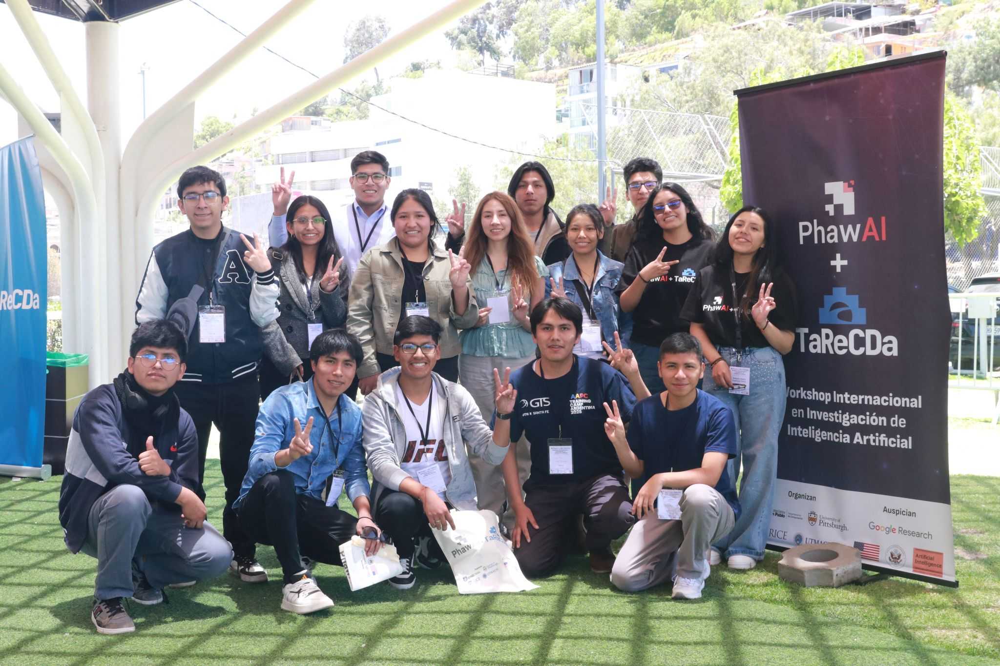

apasionado por los algoritmos, la teoría de grafos y las fronteras de las ciencias de la computación. Me gusta estudiar nuevos temas en todos los campos de la ciencia. Disfruto especialmente los problemas que involucran teoría de grafos, computación paralela y GPU computing. Fuera de la tecnología, me sumerjo en la música.
Sobre Mí
Soy estudiante de Ciencias de la Computación en la UNSAAC (Cusco, Perú), en mi último semestre, culminando mi tesis sobre modelado predictivo arqueológico con Machine Learning y datos geoespaciales. Antes de la universidad, estudié en el COAR Ayacucho, un colegio público de alto rendimiento al que ingresé mediante un examen nacional.
La programación competitiva es parte fundamental de lo que soy. Representé a la UNSAAC en el ICPC South America Regional durante tres años consecutivos (2022–2024) y me convertí en el competidor mejor rankeado de Codeforces en Cusco (Expert, máx 1622). Entrené en el Training Camp Argentina (2024, 2025) y el Training Camp Arequipa (2025).
Mis intereses de investigación están en teoría de grafos, GPU computing (CUDA), algoritmos paralelos y ciencias de la computación en general. Me atraen los problemas en la intersección entre teoría y computación de alto rendimiento, y estoy orientándome hacia estudios de posgrado en estas áreas.
En el lado comunitario, cofundé la CS Cusco Initiative para llevar educación en CS a provincias rurales andinas, soy voluntario en WarmiTech Cusco enseñando programación a mujeres jóvenes, lideré el Grupo de Programación Competitiva UNSAAC, y cofundé el Capítulo IEEE CS en la UNSAAC.
Fuera de la computación, toco guitarra, leo sobre ciencia y filosofía, y disfruto explorando nueva música.
Logros
2025
NASA Space Apps Challenge Cusco — Ganador. Desarrollé FarmGuardians, un juego educativo usando datos de la NASA.
2024
IEEEXtreme 18.0 — Top 5 en Perú, Top 150 mundial. Equipo "Wozmit". Ranking
2024
Campeón CUSCONTEST (2023 & 2024) — Ganador como equipo "Watashi WA choudo nani ga". Scoreboard
2024
ENEISOFT — Top 7 en Perú.
2023
ELECON — Ganador. Primer lugar en la competencia de programación del congreso internacional.
2022–2024
ICPC South America Regional — Representé a UNSAAC en tres ediciones consecutivas. Perfil ICPC
2024–2025
Training Camp Argentina — Rosario (2024) y Santa Fe (2025).
Experiencia y Educación
Experiencia Laboral
GeoAI Developer
Ruwark (Consultoría Arqueológica), Cusco, Perú
Enero 2026 – Presente
Construí un modelo predictivo para descubrimiento de sitios arqueológicos usando scikit-learn y XGBoost, entrenado con features geoespaciales derivadas de DEMs satelitales (GDAL, Rasterio, GeoPandas). Integré Google Gemini API para extracción automatizada de datos de informes arqueológicos. Contribuí al backend de microservicios (Laravel, Node.js, Docker) y frontend Next.js/React.
Desarrollé un sistema de facturación electrónica con frontend en Angular y backend en C#/.NET. Implementé endpoints REST API e integré la pasarela de pago Izipay.
AngularC#.NETREST APIsIzipay
Practicante de Desarrollo Web
Tikaymi, Cusco, Perú
Mayo 2025 – Noviembre 2025
Construí un sistema de gestión documental desplegado en producción. APIs REST con Django, frontend con Vue.js, contenedorizado con Docker en ambientes de producción y staging. Metodología ágil con Scrum.
DjangoVue.jsDockerPostgreSQLGit
Educación
Bachiller en Ciencias de la Computación
Universidad Nacional de San Antonio Abad del Cusco (UNSAAC)
2020 – 2026 (último semestre)
Tesis: Modelado predictivo de potencial arqueológico usando Machine Learning y datos geoespaciales. Miembro del ACM Student Chapter e IEEE Computer Society.
COAR Ayacucho — Ciencias
Colegio de Alto Rendimiento (Escuela Pública Nacional de Alto Rendimiento), Ayacucho, Perú
2017 – 2019
Selección nacional altamente competitiva para estudiantes de alto potencial de familias de bajos recursos. Currículo STEM intensivo con enfoque en pensamiento crítico.
Proyectos
Modelado Arqueológico Predictivo — ML + GIS
Investigación Independiente / Tesis UNSAAC
2025 – Presente
Pipeline de ciencia de datos reproducible de extremo a extremo para predecir ubicaciones de sitios arqueológicos. Organizado en 4 etapas de Jupyter Notebooks: adquisición de datos, ingeniería de features desde DEMs satelitales, entrenamiento de modelos (scikit-learn, XGBoost) y visualización geoespacial. Dataset: ~27,000 muestras balanceadas a 30m de resolución. Publicación planeada para ACM SIGSPATIAL o similar. [Repo]
Ganador del NASA Space Apps Challenge Cusco (2024 & 2025). Juego educativo basado en datos de observación terrestre de la NASA (NDVI, temperatura, humedad del suelo) transformados en misiones agrícolas interactivas. Lideré el equipo de desarrollo. [Repo] | [Demo]
UnityC#NASA APIsData PipelinesGame Design
Estimación de Dureza Óptima en Aleaciones Metálicas
UNSAAC, Cusco, Perú
Febrero 2024
Combiné regresión multilineal con algoritmos genéticos para optimizar la dureza de aleaciones. Mejoré la métrica objetivo en 15%, alcanzando 0.02 MSE.
PythonPandasNumPyscikit-learnGenetic Algorithms
Juego de la Vida de Conway — Autómata Celular
Proyecto Personal
2025
Implementación interactiva del Juego de la Vida de Conway con Pygame. Incluye Gosper Glider Guns, osciladores Pentadecathlon, HUD en tiempo real, pausa/reanudación y celdas toggle con clic. Incluye generador de GIFs. [Repo]

PythonPygameCellular Automataimageio
Repositorio de Programación Competitiva
GitHub Personal
En curso
Soluciones, técnicas y código de práctica para ICPC, IEEEXtreme, CUSCONTEST y Codeforces. [Repo]
C++PythonAlgorithmsData Structures
Voluntariado y Comunidad
CS Cusco Initiative — Cofundador
Proyecto educativo sin fines de lucro, Cusco, Perú
2026 – Presente
Cofundé una iniciativa sin fines de lucro para llevar educación en ciencias de la computación a jóvenes de provincias rurales de Cusco (provincias altas y Valle Sagrado). El programa incluye charlas motivacionales, cursos introductorios de Python y entrenamiento en programación competitiva. Asesorado por Edison Ttito Concha (SWE @ Amazon Brazil).
Bootcamp de Programación Competitiva — Instructor Principal
UNSAAC, respaldado por el Decano y Capítulo ACM
2025
Diseñé e impartí un bootcamp de varios días para estudiantes de pregrado cubriendo algoritmos, grafos, programación dinámica y estrategias de competencia. Mejoré la participación y rendimiento de los equipos UNSAAC en competencias regionales.
WarmiTech Cusco — Instructor de Programación (Voluntario)
Instructor voluntario enseñando programación y programación competitiva introductoria a mujeres jóvenes, promoviendo la participación femenina en STEM.
Google Peru Student Summit — Student Lead
OmegaUp + Hola Cloud (Google), Cusco
Septiembre 2024
Coordiné logística y guié a más de 150 asistentes en un summit tecnológico patrocinado por Google en Cusco. Certificado por Andrea Santillana (Directora de OmegaUp) y Geraldine Francia (Hola Cloud Global Lead).
Cofundé el Capítulo Estudiantil de IEEE Computer Society en UNSAAC. Organicé IEEEXtreme 18.0 en Cusco y promoví la programación competitiva en la Región 9 de IEEE.
Lideré el grupo de programación competitiva de la universidad. Enseñé algoritmos y estructuras de datos, organicé sesiones de entrenamiento y concursos de práctica para preparación ICPC.
Galería
Momentos que marcaron mi camino — competencias, comunidades y experiencias.

ICPC South America Regional 2025 — Delegación UNSAAC

Equipo ICPC "El Bendito Fulkerson" — Regional 2025

ICPC — Representando a UNSAAC con orgullo

Primer equipo ICPC "Maqueentosh" — Donde comenzó el camino
Primer RPC — 6 problemas resueltos, globos ganados 🎈

Campeón CUSCONTEST XX — 10 problemas, 1° de 54+ equipos

NASA Space Apps Challenge — Equipo ganador FarmGuardians
Training Camp Argentina 2025 — Santa Fe

Equipo "Pancito" — El primer equipo de programación competitiva

WarmiTech Cusco — Enseñando programación a mujeres jóvenes

PhawAI + TaReCDa 2025 — Workshop de Investigación en IA, UCSP Arequipa
Hobbies e Intereses
Cuando no estoy programando o resolviendo problemas algorítmicos, disfruto de actividades que me ayudan a mantenerme creativo, equilibrado y en constante aprendizaje.
Lectura: Novelas, literatura en general, algo de filosofía y ciencia. Me ayuda a ampliar perspectivas y profundizar en las ideas.
Música y Guitarra: Explorando diferentes géneros, especialmente EDM y rock. Tocar guitarra es una forma de relajarme y expresar creatividad.
Puzzles: Cubos de Rubik y otros puzzles mecánicos. Complementa mi interés en algoritmos al encontrar patrones y optimizar soluciones.
Cine y Series: Abierto a buenas recomendaciones. Estoy empezando a apreciar el séptimo arte y disfruto explorar narrativa y cinematografía.
Videojuegos: MOBAs y juegos de aventura. Fascinantes tanto como entretenimiento como por el estudio de mecánicas de juego y estrategia.
Contacto
Siempre feliz de conectar con otros programadores, investigadores o cualquier persona apasionada por los algoritmos y la programación competitiva. ¡No dudes en escribirme!